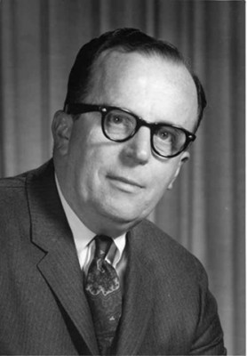

Man-Computer Symbiosis
A paper written by J. C. R. Licklider1 on March 1960 served the purpose of presenting a concept of man-computer symbiosis which later on lead the idea of Internet. Man-computer symbiosis is an expected development in cooperative interaction between men and electronic computers. It will involve very close coupling between the human and the electronic members of the partnership. It is a sub-class of man-machine system. There are many man-machine systems. At present, however, there are no man-computer symbioses.
The article by J.C.R. Licklider consisted. Computers existing now a days can only solve preformulated problems or they can only process the data they are told by determined procedures. They can only work according to the given situations, how it should work if a specific case or situation is seen, but it can not make a decision on the situations which are not already known,e.g a new situation comes about which the computer was not already aware it will give an error or get stuck, and has no idea what to do next. When a person is programming for a computing machine it has already in mind that how it disciplines the thought process. If the user can think his problem through in advance, symbiotic association with a computing machine is not necessary. One of the main aims of man-computer symbiosis is to bring the computing machine effectively into the formulative parts of technical problems. The other main aim was to bring computing machines effectively into processes of thinking that must go on in "real time," time that moves too fast to permit using computers in conventional ways. For example you have sheduled something for a specific time but at once the whole case changes and you need to change everything in a short limit of time. If they could be introduced effectively into the thought process, the functions that can be performed by data-processing machines would improve or facilitate thinking and problem solving in an important way.
"Is reasonable, in the next 10 or 15 years, a think tank that will incorporate the functions of libraries today, along with advances in information storage and retrieval. That means a network of such centers, connected to each other in line broadband communication, and service users through wiring." - Licklider
In Licklider's vision, many of the pure artificial intelligence systems envisioned at the time by over-optimistic researchers would prove unnecessary. This paper is also seen by some historians as marking the genesis of ideas about computer networks which later blossomed into the Internet.
External Links
- [Visited On 06/11/2014] J.C.R. Licklider
- [Visited On 06/11/2014] Licklider's Article
- [Visited On 06/11/2014] Licklider Image